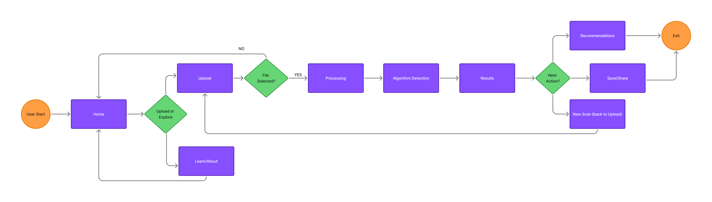
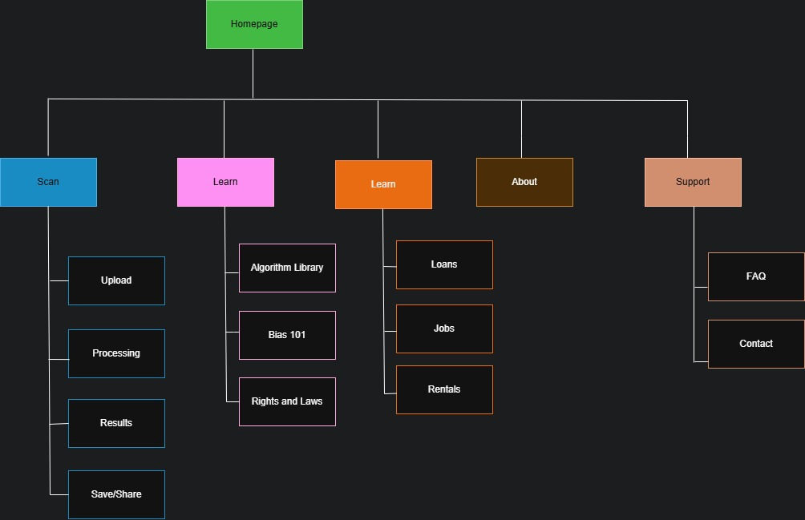
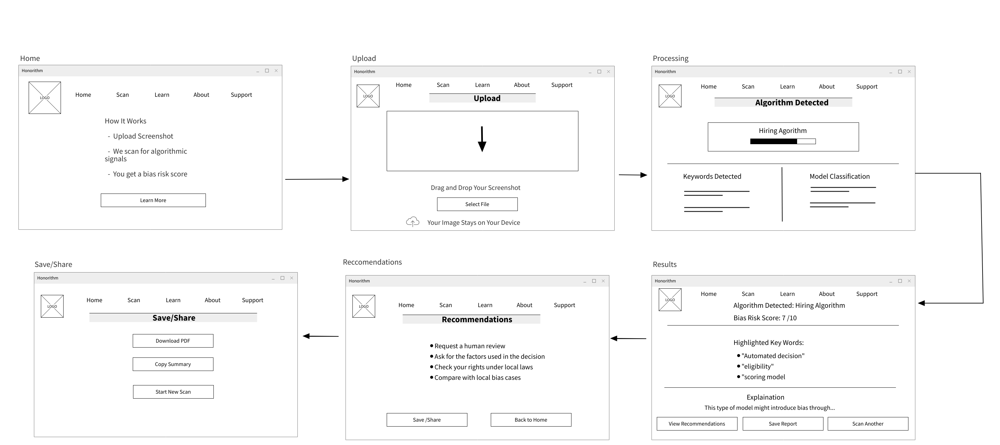
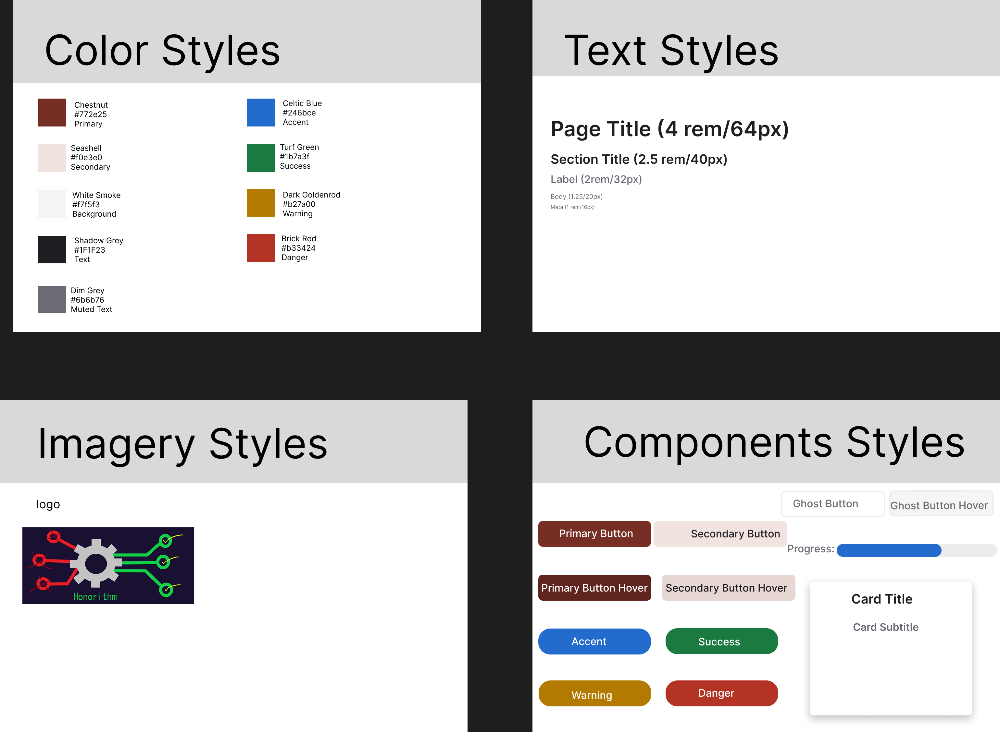

Honorithm
Honorithm is a simple, reliable, and friendly algorithm transparency checker that uncovers hidden algorithmic bias and helps understand automated decisions.
Overview
Many people receive automated decisions every day - job rejections, loan denials, and insurance quotes - yet have no idea how these decisions were made. Algorithms are opaque, incredibly complex, and often biased.
The overall goal was to design a simple web-based platform that checks to see if there are any hidden biases or judgment behind algorithms they encounter daily and helps them make them clear and transparent.
Role
- UX researcher
- UX designer
- UX engineer
Tools
- Draw.io
- Figma
- MockFlow
Details
- Duration: December 10, 2025 - January 8, 2026
- Company/Client: Myself
Process
The process for this project consists of the following:
Research
- Context study
- Target Audience
- Pain Points
Analysis
- Project Goals
- Use Cases
Ideation
- Journey Map
- Information Architecture
- Visual Design Direction
Design
- Low-Fidelity Wireframes
Hand-off
- High-fidelity wireframes
- Case Study Summary
- Reflection
- Next Steps
Research
Context Study
People today interact with automated decision systems constantly — from loan approvals to job screenings to rental applications — yet most have little understanding of how these systems work or why certain outcomes occur. To evaluate how well current platforms support users in navigating algorithm‑driven decisions, I analyzed how individuals experience and interpret these opaque processes.
I focused on three key areas:
- Clarity and transparency of decison explanations
- Accesiblity of information about underlying algorithms
- User ability to identify potential bias or unfairness
Target Audience
I identified four primary users:
- Job seekers
- Loan and credit applicants
- Renters
- Consumers
Pain Points
Across research, players consistently struggled with:
- Opaque decison making
- Difficulty overcoming bias
- Confusing or complex technical language
- No clear next steps
Project Goals
The website needed to:
- Make algorithmic decisions understandable
- Help users identify bias risks
- Build trust through transparency and simplicity
Use cases
I want to understand a loan denial
I want to decode a job application rejection
I'm looking to interpret a rental application result
I'm trying to learn about algorithmic bias in general
Ideation
User Flow Map
The user flow map focuses on illustrating the step‑by‑step path users take from uploading a screenshot to receiving clear results and recommendations.
Information Architecture
I designed a clear, scalable sitemap to map out the structure and hierarchy of the website, ensuring intuitive navigation and clear content organization.
This structure supports both quick sessions and deeper engagement
Design
Low-Level Wireframes
I created low-level wireframes using MockFlow, which focused on clarity, speed, and accessibility.
Visual Design Direction
I created several stylesheets to establish the color palette, typography, imagery, and several of the UI elements. The idea was to create an aesthetic that felt grounded and trustworthy, yet serious and authoritative.
Handoff
High-Fidelity Wireframes
After some adjustments based on the low-fidelity wireframes, interactive high-fidelity wireframes were created on Figma.

Case Study Summary
Honorithm focused on creating a web‑based tool that makes automated decision‑making systems more understandable and accessible, addressing common user frustrations such as opaque algorithmic processes, unclear risk implications, and limited guidance on next steps. Through user research, competitive analysis, and iterative design, I developed a concept that identifies algorithmic signals within screenshots, highlights key indicators, explains potential bias risks, and offers clear, actionable recommendations. The resulting structure provides a scalable foundation for future development, including high‑fidelity prototyping, usability testing, and expanded detection capabilities, demonstrating how thoughtful UX design can transform a complex and often intimidating domain into an empowering, transparent experience for a wide range of users.
Reflection
Key Takeaways:
- This project reinforced that explainability is a design problem, not just a technical one. Users don’t just want to know what the system detected—they need to understand why it matters and what they can do next. Designing for comprehension became just as important as designing for functionality.
- How clarity beats complexity. Even when dealing with a highly technical domain like algorithmic transparency, users respond best to simple, well‑structured flows that reduce cognitive load and build trust.
Next Steps
This project laid the groundwork for a more functional site. The next phase will include:
- Creating prototypes and then later a fully functioning website using GitHub, JSON, and Visual Studio Code
- Conducting more usability testing
- Exploring a browser extension for scanning decisions in real time
- Implementing an “algorithm dictionary” for public education